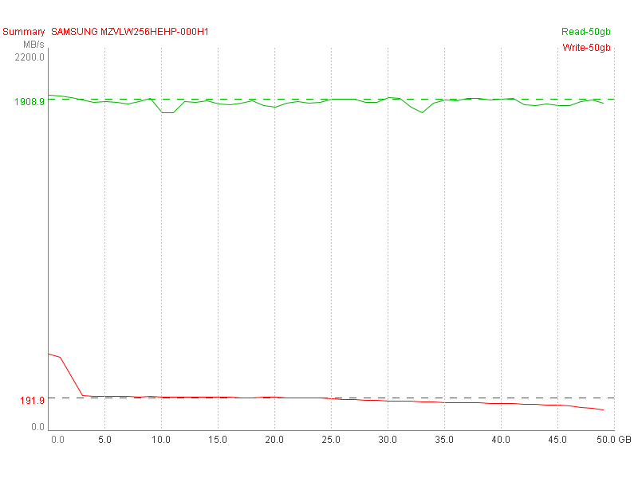
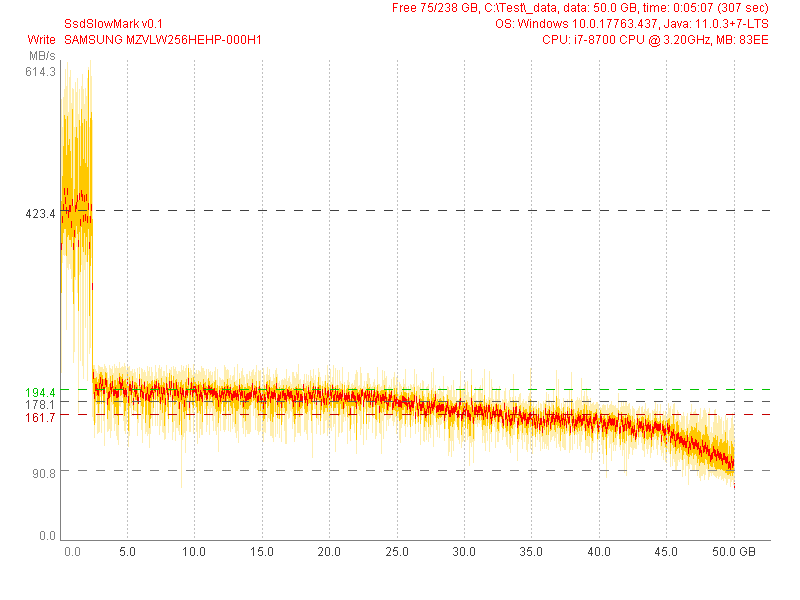
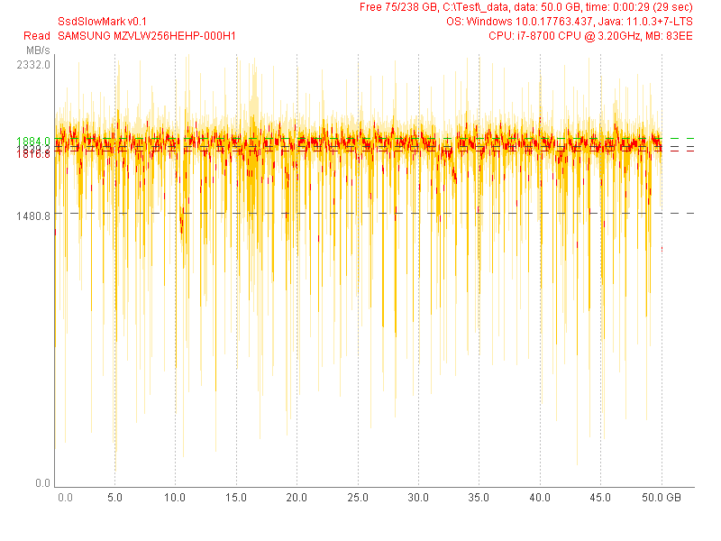

SAMSUNG MZVLW256HEHP-000H1 (Test 50 GB) |
|
| SsdSlowMark v0.1, CPU: i7-8700 CPU @ 3.20GHz, MB: 83EE, OS: Windows 10.0.17763.437, Java: 11.0.3+7-LTS | |
| Read Performance | Write Performance |
avg.max: 1839.2 MB/s, 97.8% (48.9 GB)
mid: 1480.8 MB/s, 29.5% (14.8 GB)
min: 91.9 MB/s, 0.0% (0.0 GB)
typ.max: 1884.0 MB/s, 97.2% (48.6 GB)
typ.min: 1816.8 MB/s, 98.4% (49.2 GB)
|
avg.max: 423.4 MB/s, 4.6% (2.3 GB)
mid: 178.1 MB/s, 95.0% (47.5 GB)
min: 90.8 MB/s, 45.8% (22.9 GB)
typ.max: 194.4 MB/s, 91.8% (45.9 GB)
typ.min: 161.7 MB/s, 95.1% (47.6 GB)
|
|  | |
|  | |
|  | |